Wat is AI en hoe werkt het écht? • Van wiskundig fundament naar dagelijkse assistent
Hoe 70 jaar wiskunde leidde tot de huidige doorbraak.
Neurale netwerken en grote taalmodellen ontrafeld.
De 3 gouden regels voor effectief en betrouwbaar gebruik.
Jan Martin Jansen
Van oude mythologie tot hedendaagse sciencefiction
Wat decennialang pure sciencefiction leek, zit nu gewoon gratis als app in onze broekzak.
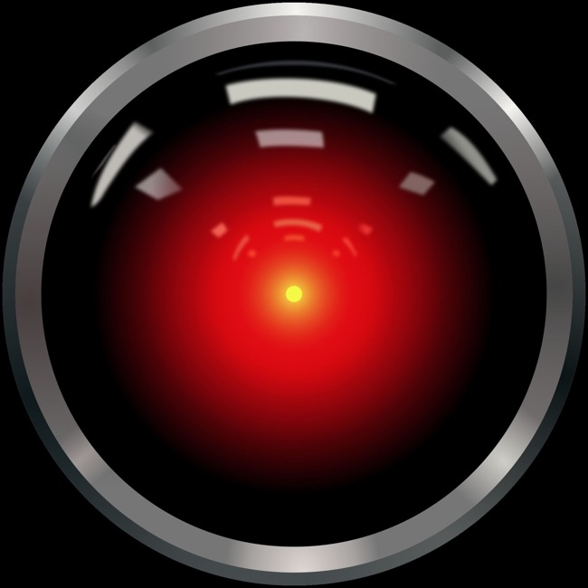
De explosieve opmars van generatieve AI
🔥 Explosie van tools: ChatGPT, Google Gemini, Copilot, Claude & Perplexity.
🗣️ Gewone mensentaal: Geen formules of code meer: typ of spreek gewoon Nederlands.
Brieven schrijven, stukken samenvatten, beelden maken en vertalen. Hoe kan dit zomaar ineens?
Waarom computers en mensen elkaar perfect aanvullen
125.234 × 365.444 = 45.765.918.896
Een rekenmachine doet dit in 1 milliseconde foutloos. Mensen vinden dit zonder papier ondoenlijk.
Is dit een kat of een hond?
Een peuter herkent dit moeiteloos in een fractie van een seconde. Voor traditionele computers was dit decennialang onmogelijk!
Van starre regelsystemen naar zelflerende netwerken
Van biologisch neuron naar patroonherkenning
Leren = verbindingen tussen neuronen fysiek versterken of verzwakken door herhaling en ervaring.
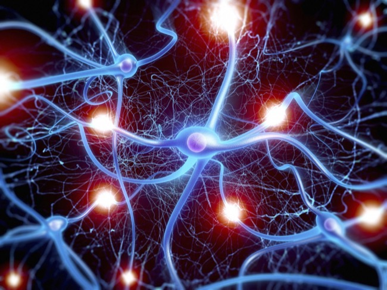
Wiskundige knooppunten en gewichten
Verbindingen tussen knooppunten hebben getallen (gewichten). Dit bepaalt de signaalsterkte. Het hele netwerk is 100% wiskunde in software!
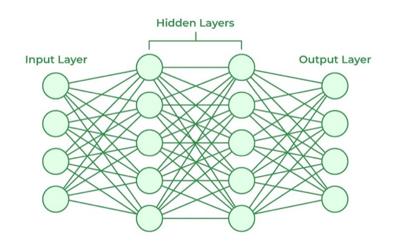
De klassieke aanpak: regels programmeren voor elk detail
Schrijft iemand een afwijkende krul, of zit er een koffievlek op de envelop? Dan loopt het regelsysteem direct vast!
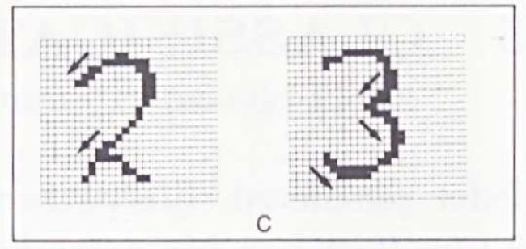
Een neuraal netwerk getraind op tienduizenden voorbeelden
Het netwerk ontdekt door training zelfstandig welke combinaties van pixels bij een 8 of een 3 horen.
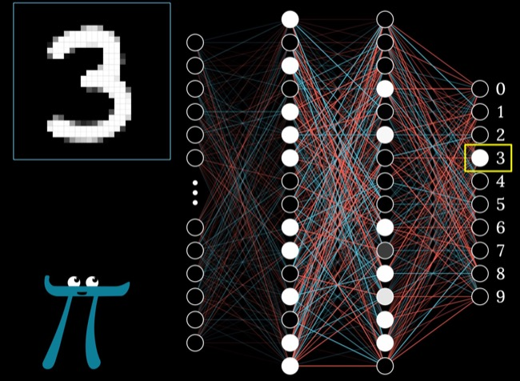
Hoe een neuraal netwerk leert van zijn eigen vergissingen (Backpropagation)
Van postcodes naar gezichts- en spraakherkenning
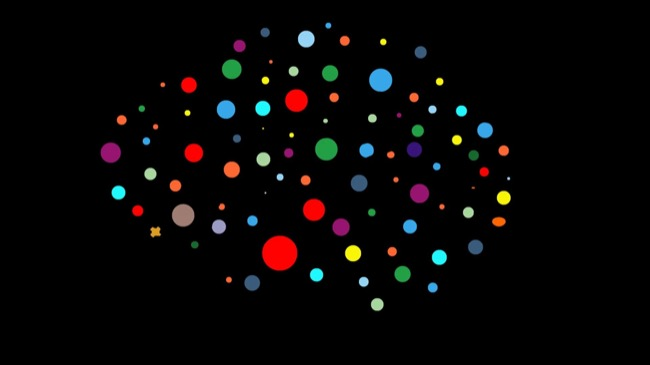
Waarom taal zo moeilijk was en hoe de Transformer alles veranderde
Bekijkt via een Aandachtsmechanisme (Self-Attention) alle woorden tegelijk. De motor achter ChatGPT, Gemini en Claude!
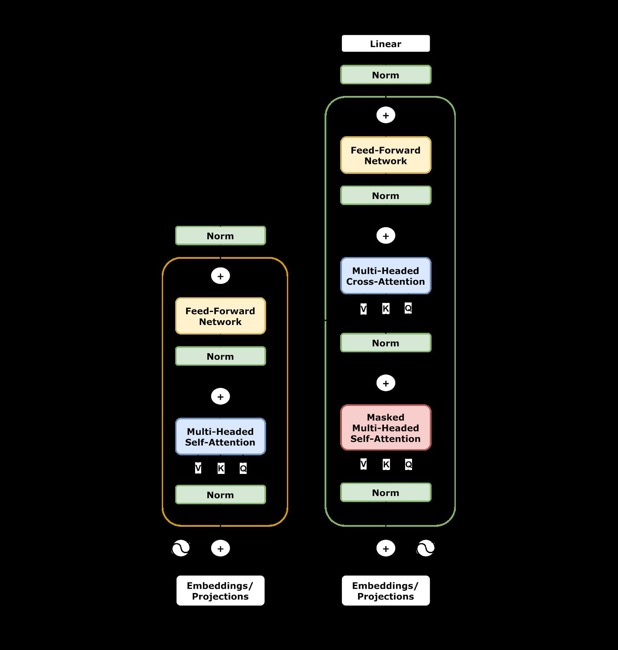
Van petabytes aan internettekst naar semantische coördinaten
Woorden worden getallenreeksen in een ruimte met duizenden dimensies. Verwante concepten clusteren wiskundig samen: Koning - Man + Vrouw ≈ Koningin.
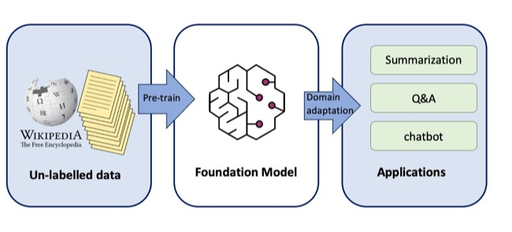
Waarom een taalmodel kan klinken als een professor, maar kan hallucineren
Weet de AI iets niet? Dan geeft het zelden toe dat het het niet weet. Het model verzint met vol zelfvertrouwen een overtuigend, maar onwaar antwoord!
Van ruwe tekstvoorspeller naar behulpzame dialoogpartner (RLHF)
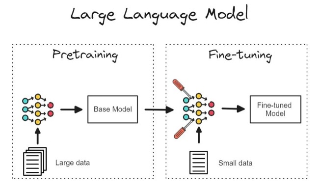
Multimodaal (Vision & Audio) en logisch redeneren
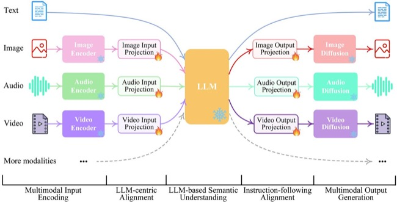
Wetenschappelijke doorbraken: AlphaZero en AlphaFold
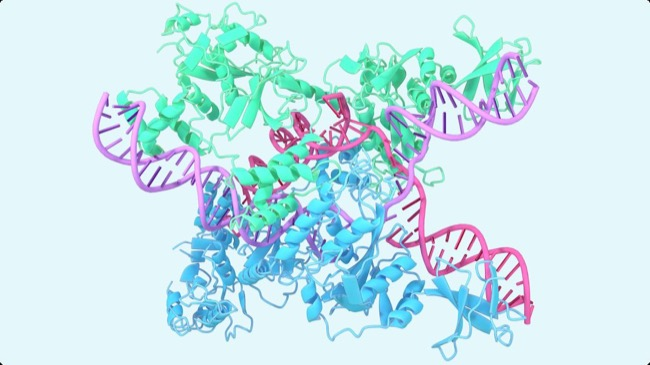
Hoe haal je het maximale uit AI zónder in de valkuilen te trappen?
Van passief toeschouwer naar actieve bestuurder van AI
Een stroeve formele brief omzetten naar een vriendelijke, heldere e-mail in jouw eigen stijl.
Een taai rapport of lang artikel invoeren en in seconden een scherpe samenvatting van 3 punten krijgen.
Experimenteren met verschillende Persona's, context en vervolgvragen (doorvragen).
Klap je laptop open, open je browser en laten we beginnen met de eerste oefening!
ChatGPT als referentiepunt: wanneer kies je een andere assistent?
Geen hallucinaties: uitsluitend antwoorden gebaseerd op jóuw documenten
Met één klik tovert NotebookLM jouw taaie documenten om in een levendig Engels radiogesprek tussen twee AI-presentatoren die jouw dossier bespreken!
AI Agents die software bouwen, bestanden beheren en taken uitvoeren
Claude Code, Google Antigravity & Codex: zelfstandig werkende agents die complete websites en programma's ontwikkelen.
Stop met zoeken zoals in Google • Start met regisseren als een opdrachtgever
Herinner je de theorie: AI voorspelt woorden op basis van context. Hoe specifieker jouw RCTK-kader, hoe verbluffender het resultaat!
Open je laptop of tablet • Start ChatGPT, Gemini of Copilot